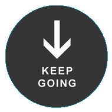

STICKYMENU FOR JQUERY
A script by Abhi Ghosh


Stickymenu.js is a lightweight jQuery plugin for neatly and smoothly keeping menus and other ui elements visible at the top of a page.
To use simply:
1. Include jQuery
2. Include stickymenu.js
3. Initialise stickymenu
The following example initialises stickymenu for the element with id 'stickymenu'.
1. Include jQuery
2. Include stickymenu.js
3. Initialise stickymenu
The following example initialises stickymenu for the element with id 'stickymenu'.
<script src="jquery.js"></script> <script src="jquery.stickymenu.min.js"></script> <script> $(document).ready(function(){ $("#stickymenu").stickymenu(); }); </script>

Options
Stickymenu.js was born after being unable to find a sticky menu script that handles touch events in a smooth and graceful way. Additionally, almost all such scripts fail to adequately cater to antiquated browsers without position:fixed support such as IE6.
Stickymenu.js solves these problems by animating elements appropriately when the scroll event is triggered on touch browsers or older browsers, and exploiting absolute and fixed positioning on supported browsers.
Stickymenu.js solves these problems by animating elements appropriately when the scroll event is triggered on touch browsers or older browsers, and exploiting absolute and fixed positioning on supported browsers.
Options
This example makes the element with id 'stickymenu' stick to the top with an offset of 100px.
<script src="jquery.js"></script> <script src="jquery.stickymenu.js"></script> <script> $(document).ready(function(){ $("#stickymenu").stickymenu({offset: 100}); }); </script>
This example makes the element with id 'stickymenu' stick to the top and disables animations for any browser.
<script src="jquery.js"></script> <script src="jquery.stickymenu.js"></script> <script> $(document).ready(function(){ $("#stickymenu").stickymenu({neverAnimate: true}); }); </script>
This example makes the element with id 'stickymenu' stick to the top and disables it if on a touch enabled device.
<script src="jquery.js"></script> <script src="jquery.stickymenu.js"></script> <script> $(document).ready(function(){ $("#stickymenu").stickymenu({touchDisable: true}); }); </script>
The end! A script by Abhi Ghosh